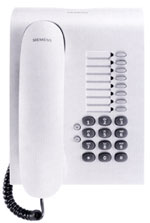
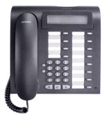
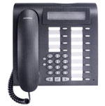
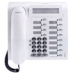
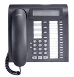
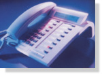
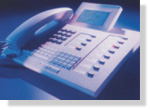

|

|
|
|
SYSTEMTELEFONE
Download: Datenblatt Optiset E Endgeräte
Download: Datenblatt optiPoint 500 Endgeräte
|
optiPoint 500 entry:
Einstiegsmodell
8 Funktionstasten mit Leuchtdioden
Lauthören
2 Einstelltasten (Plus / Minus) für Ruftonlautstärke, Ruftonklangfarbe und Aufmerksamkeitsruf
Zur Wandmontage geeignet
Farben: arctic, mangan
|
 |
optiPoint 500 economy
12 Funktionstasten mit Leuchtdioden
Lauthören
Alphanumerisches LCD-Display mit 2 Zeilen zu je 24 Zeichen, schwenkbar
3 Dialogtasten zur interaktiven Benutzerführung: Ja-, Zurück- und Weitertaste
2 Einstelltasten (Plus / Minus) für Ruftonlautstärke, Ruftonklangfarbe, Aufmerksamkeitsruf & Displaykontrast
Zur Wandmontage geeignet
Farben: arctic, mangan
|
 |
optiPoint 500 basic
12 Funktionstasten mit Leuchtdioden
Lauthören
Integrierte USB 1.1-Schnittstelle
1 Adaptersteckplatz
1 Schnittstelle für max. 2 Beistellgeräte:
- optiPoint key module
- optiPoint signature module
Alphanumerisches LCD-Display mit 2 Zeilen zu je 24 Zeichen, schwenkbar
3 Dialogtasten zur interaktiven Benutzerführung: Ja-, Zurück- und Weitertaste
2 Einstelltasten (Plus / Minus) für Ruftonlautstärke, Ruftonklangfarbe, Aufmerksamkeitsruf & Displaykontrast
Zur Wandmontage geeignet
Farben: arctic, mangan
|
 |
optiPoint 500 standard
12 Funktionstasten mit Leuchtdioden
Vollduplex-Freisprechen mit Echounterdrückung zur Raumadaption
Integrierte USB 1.1-Schnittstelle
1 Adaptersteckplatz
1 Schnittstelle für max. 2 Beistellgeräte:
- optiPoint key module
- optiPoint signature module
Alphanumerisches LCD-Display mit 2 Zeilen zu je 24 Zeichen, schwenkbar
3 Dialogtasten zur interaktiven Benutzerführung: Ja-, Zurück- und Weitertaste
2 Einstelltasten (Plus / Minus) für Ruftonlautstärke, Ruftonklangfarbe, Aufmerksamkeitsruf & Displaykontrast
Zur Wandmontage geeignet
Farben: arctic, mangan
|
 |
optiPoint 500 advance
19 Funktionstasten mit Leuchtdioden
Vollduplex-Freisprechen mit Echounterdrückung zur Raumadaption
Integrierte USB 1.1-Schnittstelle
2 Adaptersteckplatz
1 Hör-Sprechgarnituren-Anschluss (121 TR9-5)
1 Schnittstelle für max. 2 Beistellgeräte:
- optiPoint key module
- optiPoint signature module
Alphanumerisches LCD-Display mit 2 Zeilen zu je 24 Zeichen, schwenkbar, zusätzlich mit Hintergrundbeleuchtung, die ca. 5 Sek. nachleuchtet
3 Dialogtasten zur interaktiven Benutzerführung: Ja-, Zurück- und Weitertaste
2 Einstelltasten (Plus / Minus) für Ruftonlautstärke, Ruftonklangfarbe, Aufmerksamkeitsruf & Displaykontrast
Zur Wandmontage geeignet
Farben: arctic, mangan
|
 |
Folgende SYSTEMTELEFONE von Siemens sind ebenfalls noch erhältlich:
|
optiset E entry:
Einstiegsmodell
Optiset E entry ist das Modell für den preisgünstigen Einstieg in die digitale
Kommunikationstechnik. Die 3 Funktionstasten sind mit Hicom-Leistungsmerkmalen belegt.
Weitere Hicom-Funktionen können über Kennziffern genutzt werden.
|
|
optiset E basic:
Grundausstattung für Sprach- und Datenkommunikation
Optiset E basic ist die Grundausstattung für Sprach- und Datenkommunikation, denn es ist mit einem Steckplatz
für
optiset E Adapter ausgestattet. Sie können lauthören und bei aufliegendem Hörer wählen.
8 Funktionstasten ermöglichen den komfortablen Zugriff auf wichtige Funktionen.
Weitere Hicom-Leistungsmerkmale werden über Kennziffern aktiviert.
|
|
optiset E standart, comfort, conference:
Standartmodell mit interaktiver Benutzerführung
Das leistungsstarke optiset E standart ist mit Display und den 3 Dialogtasten
für die interaktive Benutzerführung ausgestattet.
Neben Hören über Lautsprecher (lauthören) und der Wahl bei aufliegendem
Hörer ist mit diesem Modell auch Freisprechen möglich.
4 von 12 Funktionstasten sind mit Leistungsmerkmalen belegt. Die Übrigen 8 sind als
Funktions- oder Namenstasten frei programmierbar.
Profiausstattung für Sprach-und Datenkommunikation
Mit dem Modell optiset E comfort verfügen Sie über eine professionelle
Ausstattung für Sprach- und datenkommunikation. Das Gerät bietet den gleichen
Leistungsumfang wie optiset E standart, verfügt jedoch zusätzlich über
2 Steckplätze für optiset-E-Adapter und eine Anschlußmöglichkeit für
Beistellgeräte.
Konferenztelefon
Optiset E conference ist das ideale Gerät für einen großen Gesprächskreis,
der ohne Hörer über ein einziges Telefon mit excellenter Freisprechqualität kommuniziert
(z.B. bei einer Konferenz).
Das Telefon bietet den gleichen Leistungsumfang wie optiset E comfort, ist jedoch mit einem
stärkeren Lautsprecher und einem speziellen Freisprechmikrofon ausgestattet.
|
 |
optiset E memory:
Spitzenmodell für Vieltelefonierer
Das Spitzenmodell optiset E memory ist mit einem großen 8 zeiligen Display ausgestattet,
das zusammen mit den 3 Dialogtasten die interaktive Benutzerführung optimiert.
12 Funktionstasten und eine alphanumerische Tastatur für das integrierte elektronische Notizbuch
(ENB) sorgen für hohen Telekomfort.
Das ENB bietet Platz für ca. 350 Einträge, die neben
Telefonnummern auch Name, Adresse u. ä. Angaben enthalten können.
Und damit keine Wünsche offen bleiben, ist das Gerät ausgestattet mit 2 Steckplätzen
für optiset-E-Adapter und eine Anschlußmöglichkeit für Beistellgeräte
|
 |
|
|